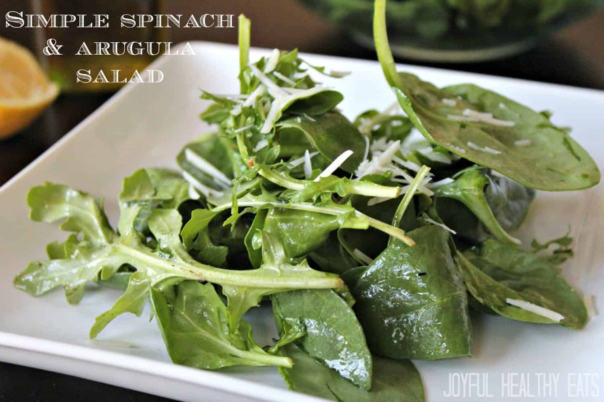

Arugula Salad

Description
Did you really think that plant rights would be forgotten here?
Well get out your pitchforks because today we are feasting green style.
And in doing so, sacrificing a few brave plants on the way.
Ingredients
- Arugula Leaves
- Olive Oil
- Balsamic Vinegar
- (Optional) Cherry Tomatoes
- The fury of a thousand suns
Steps
- Start by washing and cleaning your arugula leaves, we don't want our babies to be dirty
- Toss the salad like you toss your worries away
- Add some olive oil and balsamic vinegar
- Keep tossing to release that rage of yours you beast